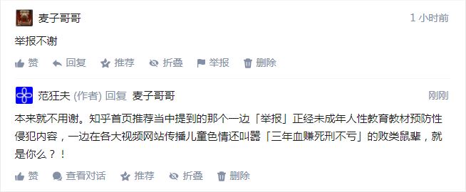

回复
谢@彭崇超邀。
张大少爷在境内官方钦定评价为「千古功臣」一点也不奇怪，本来就是锤镰帮的「救驾功臣」。1936年底陕北弹尽粮绝，常凯申「御驾亲征」准备毕其功于一役，没想到张大少爷「小人物改变历史走向」了也。至于这张大少爷算不算现代「作者编剧导演」为了督促演员而提前安插的鸡鸣狗盗之徒卧底无间道，「狗链子拴紧点，老实」，那就见仁见智喽。
回到问题本身，就事论事的说，哪怕按照部分观点认为的那样，张大少爷「奉旨」不抵抗撤出东北，也是常凯申「仁至义尽」。可以参考敦刻尔克，希特勒勒令停止进军，放英国主力撤退。按照现代「作者编剧导演」的一贯作风，这叫「增加剧情跌宕起伏程度」，若是没有后手，不远万里从非洲来到德意志民族神圣罗马帝国的反欧贱种尼格罗太君不受控制了咋办？
或者可以这么认为，当年法帝野心狼拿破仑的剧本再翻出来改改重新上演了，同样是尼格罗太君，同样是武德充沛，同样是天命昭昭，同样是摧枯拉朽横扫欧洲大陆，同样是主演波澜壮阔之后下台三鞠躬，留下傻哔抹布炮灰支持者群众演员费拉不堪。
也就是说，常凯申似乎是知道钦定剧情走向的，知道东北军打不过苏联也打不过日本，毕竟是名义上拥护中央的部队，就为了激化矛盾制造冲突增加剧情跌宕起伏程度以满足人民群众日益增长的美好精神文化需求而上演全军覆没之可歌可泣悲壮一幕，太可惜了。
但是要注意，剧本是开放的，现代「作者编剧导演」都是英特纳雄耐尔主义者，不在乎几拨纳雄耐尔势力之间谁输谁赢，只要尽量消耗有生力量以完成「收割」动作即可。这种时候不必妄自菲薄，兲朝当时虽然积贫积弱，但毕竟面积够大人口够多，作为舞台最好不过。
直说吧，如果没有西安事变，陕北红军只能跑路去苏联。注意时间点：
1936年11月25日，日本和德国在柏林签订了“反共产国际协定”；
1936年11月27日，张大少爷上书常凯申请缨抗战遭拒绝；
1936年12月2日，张大少爷飞抵洛阳觐见，自称部下不稳势难支撑，再三请求常凯申前往训话。
1936年12月4日，常凯申抵达西安。
1936年12月10日，常凯申召开会议，正式通过发动第六次“围剿”计划，决定在1936年12月12日宣布动员令。
1936年12月11日晚，常凯申命令中央军接替东北军和西北军的剿共任务。张大少爷和杨虎城分别召见亲信，宣布12月12日清晨进行兵谏。
……后面的事情我们都知道了。
如果「共产国际」在兲朝境内没有立足之处了会咋样？很简单，当时一直亲德的形象已经恶化的波兰就会加入反共协定，痛快的交出但泽走廊，在东方（乌克兰）获得领土补偿。本位面历史上1938年这个条件波兰不答应，那是因为已经知道了兲朝「国共合作抗日」了。
总之，说张大少爷「小人物改变历史走向」一点也没错，至于是不是卧底无间道，以其一贯形象看来，那倒未必。估计是从小衣来伸手饭来张口没拿过比碗重的东西没下过比澡盆深的水上炕认得碧池下炕认得鞋，被「作者编剧导演」安插在身边的「鸡鸣狗盗之徒」忽悠成傻哔，脑壳进水热血上头一冲动就抢戏……冷静下来之后知道自己中了阴谋诡计被利用了才有「负荆请罪」的举动。
补充，在三年多以前的2014年10月15日，在龙空的某个应景（张大少爷刚挂）帖子后面回复了一堆内容，已经涉及到了「剧本战争」相关观点。
当时还没有这么多灌水机到处追着我喷，顺便炒作「作者最大剧本钦定导演叫人三更死谁敢留人到五更」，所以我对于「激化矛盾制造冲突增加剧情跌宕起伏程度」的文艺理论之理解也不算深入。
回复内容转贴如下，需要结合当时的境内外局势理解：
Tacitus
张学良的人生是按照军阀和政治家接班人的目标规划的，手头有权力才可以发挥作用，所以没了军政大权之后才会感觉自己（作为公众人物的）生命结束了。
实际上从出来之后的表现可见，软禁几十年对于其脑力和体力并没有太大影响。几十年间或许从事其他副业以及兴趣爱好，肯定不是得过且过混吃等死的心态。
不过就从他陪着常凯申回南京准备送死的表现看，应该是知道自己坏了大事。虽然这个大事不见得有利民族大义，但是也不见得有悖，历史复杂不是非黑即白。
即便按照道家那种“消极”人生态度，功成名遂身退天之道，未尽全功也不能退吖，行百里者半九十，眼看着功亏一篑岂不是前功尽弃了。
Tacitus
“关怀之殷，情同骨肉； 政见之争，宛若仇雠。”
张学良代表的东北地方势力，与常凯申的江浙基本盘不一样。如果张没有被赶进关内，恐怕绝不是这个心态。
常凯申打着大义名分清除异己不是头一回了，地头蛇防备中央军比防备日本人还厉害。
换成你是背井离乡的东北军，本来就对于常凯申借刀杀人一肚子气，再碰上当时抗日更大义。
本位面张的选择是对的，但是万一平行世界他作出了另一种选择，局势会向着另外一个方向发展，结局不一定什么样。
Tacitus
东北军既不亲苏（否则不会有中东路）也不亲日（否则不会有皇姑屯），也不愿意坚持自外于中国（否则不会改旗易帜），就是纯粹直率没有境外背景的本土武装力量。当然作为军阀手下的兵痞，杀良冒功强抢民女鱼肉百姓一定是有的，但那是另外一个话题。
所以张学良的选择很正常，日俄战争在东北打祸害中国人，日苏争霸还是在东北打祸害中国人，他作为地头蛇一点办法也没有。俄苏割占大量土地，日本占了整个东北，张学良对它们都恨。更恨哪一个？要看局势了，热血上头的时候，他作出了选择，未必是全局最优解。
Tacitus
我发现有些观众的政治敏感度满分，而历史敏感度不及格吖。那就直说了吧，二战阵营不是固定不变的，张学良在背后推动了一把，于是本位面历史才是这样。
日本陆海军的斗争，体现在北上还是南下的战略选择，实质是很难决定反苏还是反英美。本位面日本选择了站在英美的对立面，于是德国随之对美宣战。
毫无疑问当时的土共是苏联阵营的，虽然不再是共产国际支部，但仍然在实质上是苏联派出机构，能够帮助苏联分担压力最好不过了。
而欧洲战场之所以西线势如破竹以至于法国经济也未受损军力也及时撤走那都是默契。而东线谁先打谁再被反推，是开放的剧本，还不一定呢。
美国则是观望的态度，“蜀胜则击吴，吴胜则击蜀”。而中国决定站队全面抗日之后，局势就开始不利于纳粹，最终轮到他主动打毛子。
不要以为这是无稽之谈。苏芬战争就是引子，如果张学良作出了另外一种选择，那么就是布尔什维克入侵自由世界而纳粹“对苏自卫反击战”了。
Tacitus
就说当初西安捉蒋之后，为啥“亲日派”拼命想干掉常凯申作为战略被破坏之后的弥补，为啥张学良见过常凯申之后后悔得陪着回南京送死，为啥国民党与纳粹关系密切直到不得不宣战之后仍然好聚好散。
张学良作为直率的军人，既没有被共济会拉拢，也没有被黑龙会拉拢，他就是单纯的本土中国人，爱国之情完全不用怀疑。但是脑壳不怎么好使这是硬伤，不过毕竟没有作出有害中国的选择，只是马后炮看来并非最有利。
好了，现在回到现在的局势，德国已经打定主意绝不第三次上当，日本对于自己的命运没有自主权。中国虽然有自主权，但是这权力还不一定握在谁的手里，是继续替俄国爹分担压力还是以中国立场作出决策。
乌克兰危机开始到克里米亚，俄国已经把纳粹剧本的前半截演完了，现在正在各方站队划分阵营的时候。我是不希望任何人出事尽量和平的解决问题，如果实在避免不了，中国如何站队，需要前三排和主席台好好想想。
Tacitus
许多人津津乐道于辛亥以来中国站队没错过，两次大战都是战胜国。可是到底有多少人认为这压根不是什么运气，而是所有可以影响时局的各行各业精英的集体决策呢。
每次难以抉择的时候，都是多边投注多方站队，不仅仅是家族内部的策略，整个上层都会有一种默契。汪精卫之所以投靠日本，之所以还能善终，不是偶然。
虽然这站队不同的各方为了各自的利益，为了背后境外盟友的利益，而互相拼杀。但是到了节骨眼上，整个精英阶层大范围的民主还是能决定最有利的方案。
Tacitus
当时的土共“武装保卫苏联”的口号就是因为中东路事件而高调宣传的。仅此而已。
再补充，把评论区应景出现的「活跃网友」之表现备份如下：

应景出现活跃网友现身说法
就在这几天，知乎首页推荐当中就出现批判包括但不限于「哔哩哔哩」在内的儿童色情内容话题，其中以「三年血赚死刑不亏」为口号的活蹦乱跳的活跃网友当中似乎就有这位@麦子哥哥，我中华兲朝上国新时代中国特色社会主义繁荣的互联网舆论，真有趣哉。